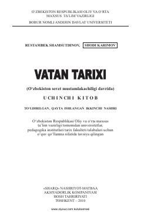

VTO'zbekistonning 1917-1991 yillardagi tarixiy voqealari va mustaqillik yo'li haqidagi o'quv qo'llanma.
Ushbu o'quv qo'llanma O'zbekistonning 1917-yilgi fevral inqilobidan 1991-yilgi mustaqillik davrigacha bo'lgan tarixini qamrab oladi. Kitobda sovet mustamlakachiligi, milliy ozodlik kurashlari, ikkinchi jahon urushi va istiqlolga erishish yo'lidagi tarixiy voqealar hujjatli manbalar asosida yoritilgan.